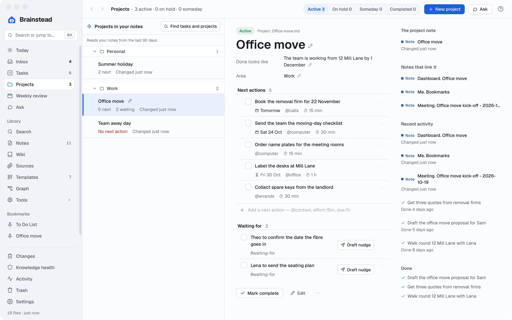
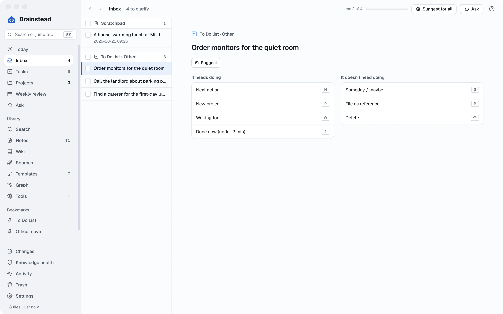
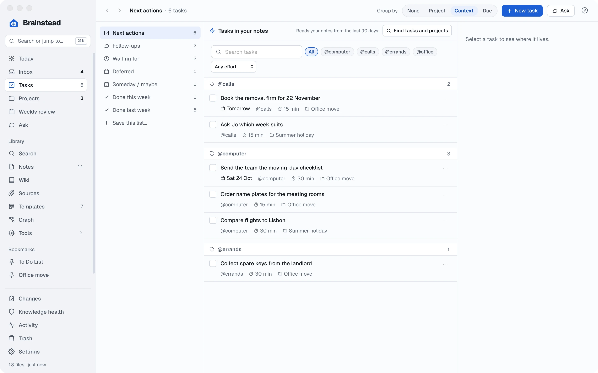
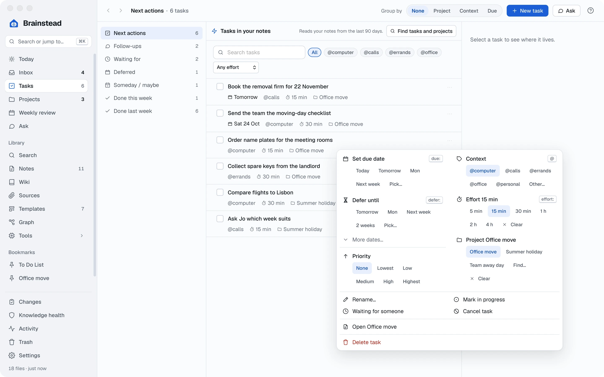
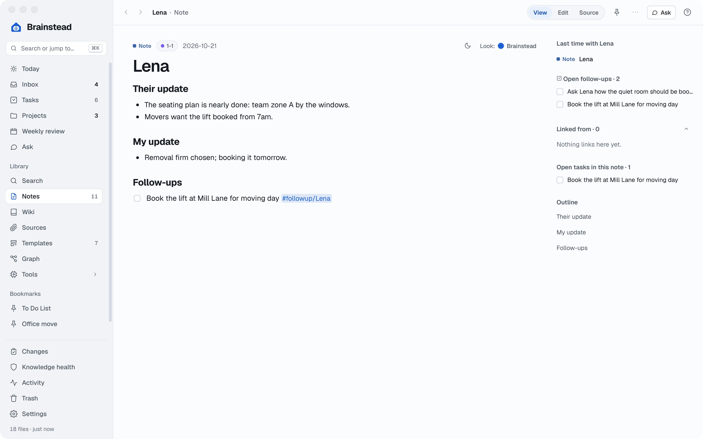
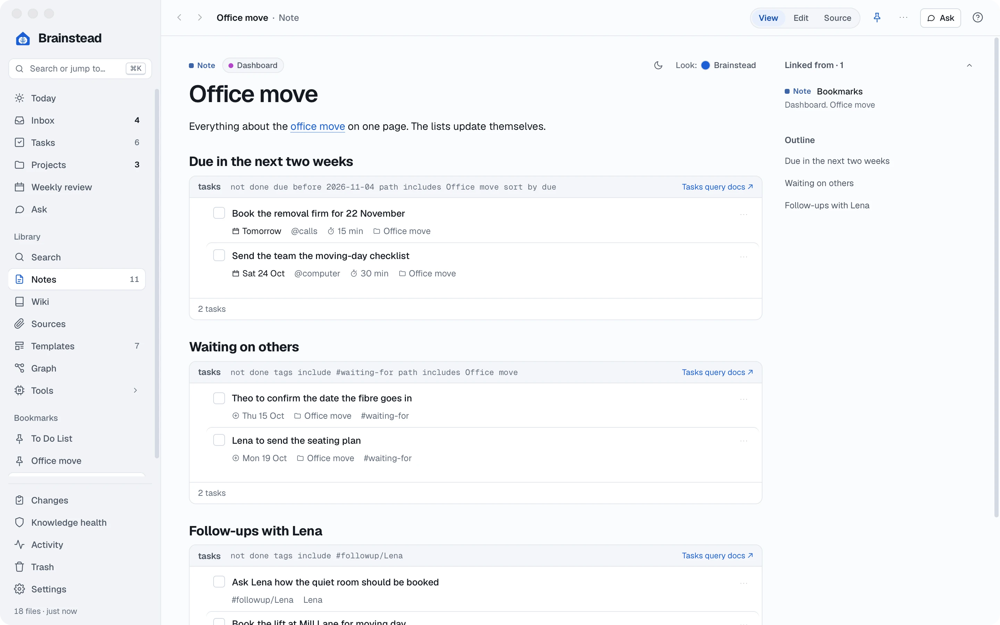
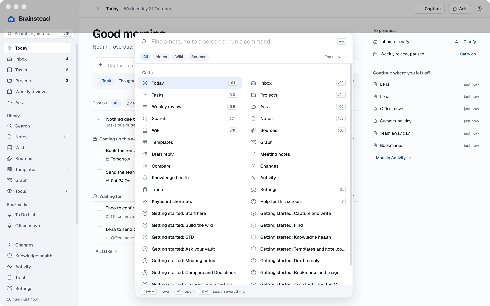
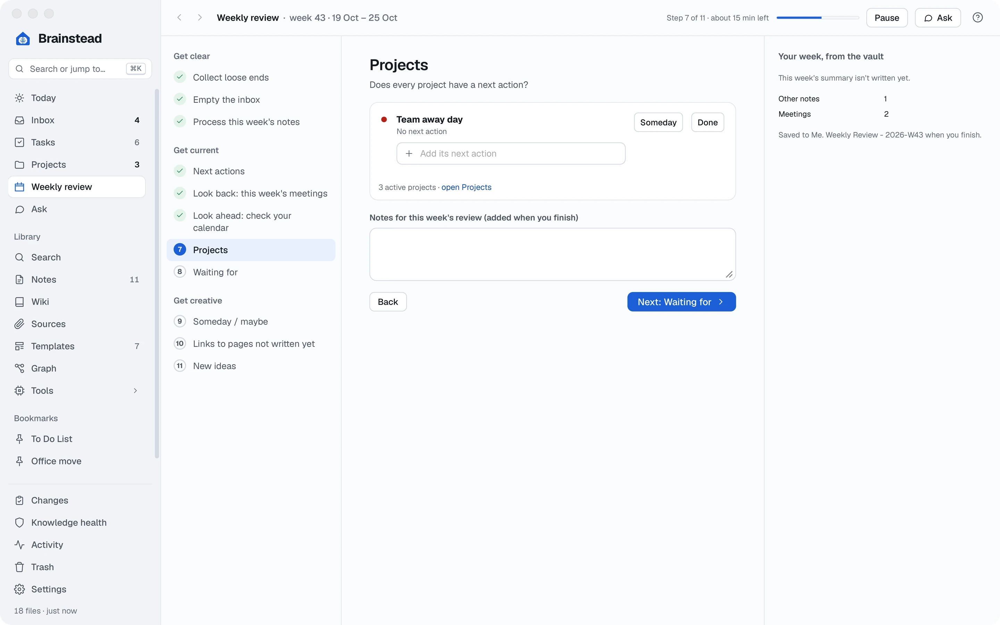
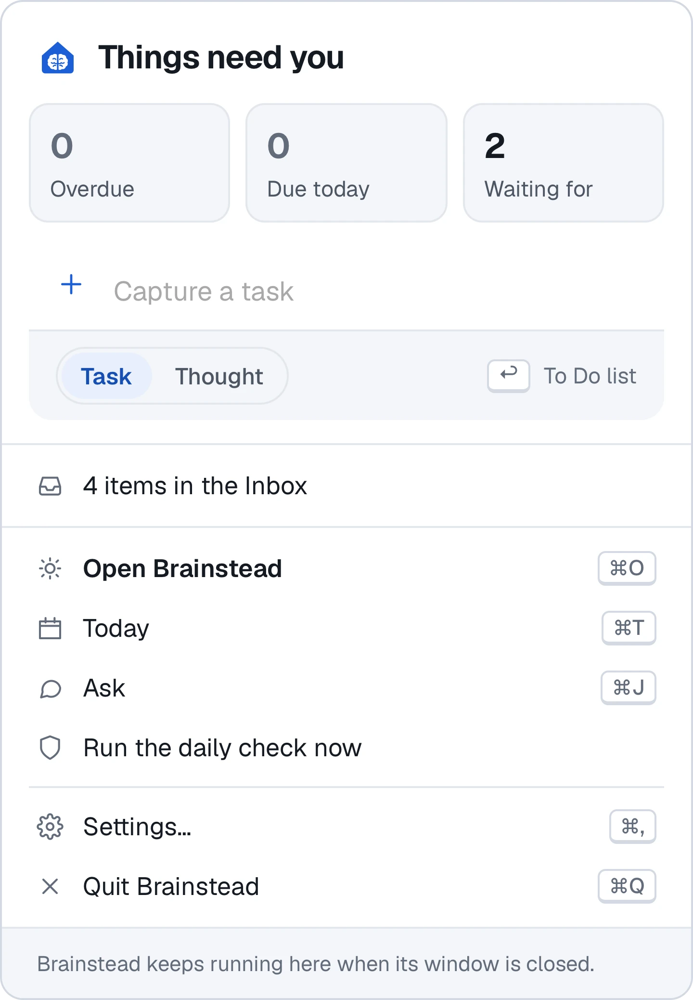

Tutorials › Intermediate
Run your week
without the worry.
Several projects, a full Inbox and people waiting on you. Set up a system you can trust, so nothing slips through.
I'm using a
The keys below follow your choice.
The story so far
Sam said yes: the team moves to 12 Mill Lane in four weeks. But the move isn't the only thing on your plate. Sam also wants a team away day in January, you're trying to book a summer holiday, and you meet Lena from facilities every week.
Things are starting to land in your Inbox faster than you can deal with them. This tutorial follows Getting Things Done: catch everything, decide what each thing is, keep it where you'll see it at the right moment, and look over it all once a week.
- Three projectseach with a next step
- An empty Inboxeverything decided
- 1-1 notesthat remember for you
- A weekly reviewto keep it all current
Give your work a home.
Anything that takes more than one step is a project. Each one gets its own note, what "done" looks like, and at least one next action: the very next thing you could physically do.
- Click Projects in the sidebar, then Office move, the project note you made in the first tutorial.
- Click the pencil beside Done looks like and write the finish line: The team is working from 12 Mill Lane by 1 December. Set Area to Work the same way.
- Under the next actions, type in Add a next action and press ↩:
Book the removal firm for 22 November @calls effort:15m due:tomorrowThe extra words become a context, a time estimate and a due date.
- Click New project at the top. Name it Team away day, write what done looks like, choose the Work area and click Make project.
- Do the same for Summer holiday, in a new area called Personal. Projects are grouped by area, so home and work stay apart.

Why a "next action"? "Organise the away day" is too big to start. "Ask the team for three dates" is something you can do in five minutes. A project with a next action keeps moving.
Empty your Inbox.
All week you've been catching things with ⌃⌥Space: monitors for the quiet room, parking permits, a caterer. Now decide what each one is. It takes seconds an item once you know the keys.
- Click Inbox in the sidebar. The first item opens on the right.
- Ask yourself: does it need doing? Then press a key:
- N a next action: pick its project or context, and save.
- P a new project, when it needs more than one step.
- W waiting for someone else.
- 2 done now: if it takes under two minutes, just do it.
- S someday / maybe, R file it in a note, or ⌫ delete it.
- For Order monitors for the quiet room, press N, choose the Office move project and the @computer context, and save. It moves into the project.
- The next item opens by itself. Keep going until the Inbox says it's empty.

Changed your mind? Press ⌘Z to undo the last choice. Nothing is lost.
The right task, right now.
You have ten minutes and your phone before a meeting. Which tasks fit? Contexts say where or with what a task can be done; effort says how long it takes. Together they find the task that fits the moment.
- Open Tasks. Next actions lists every task that's ready to do, from every project and note.
- Click a context chip, such as @calls, to see only phone calls.
- Choose 15 min or less from the effort menu to see only quick ones.
- Or choose Group by › Context in the top bar to see everything in bands: calls, computer, errands, office.
- Find yourself using a view often? Click Save this list… and give it a name, such as Quick calls. It stays on the left.

Keys for speed. On any task list, ↑ ↓ choose a task, Space ticks it, and / jumps to the search box.
Due, defer and waiting.
Not every task has a deadline, and some can't start yet. Brainstead keeps them apart, so your lists only show what you can act on today.
- On Tasks, right-click a task (or click its ⋯) to open its menu.
- Set due date is for real deadlines: the day it must be done. Use it sparingly, so a due date means something.
- Defer until hides a task until a day you choose. Label the desks at Mill Lane can't happen until you have the keys, so defer it to the day you get them. It disappears from Next actions and comes back on Today that morning.
- Waiting for someone moves a task onto the Waiting for list: Lena's seating plan, Theo's fibre date. Look at that list before you chase anyone.

Start each day on Today. It shows what's overdue, due today, back from being deferred, and who you're waiting on. If Today is clear, pick from Next actions.
Keep track of people.
You meet Lena every week. Brainstead can remember what you agreed last time, and what you still owe each other, so every catch-up starts where the last one ended.
- Press ⌘N, choose the 1-1 template and pick Lena. (The example template lists Maya, Lena and Theo; open it under Templates to put in your own people.)
- Write her update and yours under the headings.
- Anything to follow up goes under Follow-ups, as a task tagged with her name:
- [ ] Book the lift at Mill Lane for moving day #followup/Lena
- Look at the panel on the right: Last time with Lena links last week's 1-1 and lists every follow-up still open with her, from any note.

All your follow-ups, with everyone, are on the Follow-ups list on the Tasks screen.
Build a dashboard.
A note can hold a live list of tasks from across your vault. Make one page that shows the whole office move at a glance, and it keeps itself up to date.
- Press ⌘N, choose Blank note, and name it with Type Dashboard and Title Office move.
- Add a heading, Due in the next two weeks, then click Insert a query, the last button on the toolbar.
- Fill in the form: not done, due before a date two weeks away, and the path Office move so it only shows this project's tasks. The preview shows what you'll get. Click Insert.
- Add more lists the same way: Waiting on others, and Follow-ups with Lena.
- Switch to View. Each list fills in, and you can tick tasks right there.
Behind the form is a short block of plain text, which you can also type yourself:

Keep it handy. Click the bookmark button at the top of the note to pin it to the sidebar, under Bookmarks.
Find anything.
As your vault grows, don't go looking through lists. One shortcut finds any note, task, screen or command.
- Press ⌘K from anywhere.
- Type a few letters, such as mill, and press ↩ to open the best match. It finds words inside notes too, not just names.
- Need more room? Press ⌘↩ instead, for the full Search page with every match.
- Learn the screen keys: ⌘1 is Today, ⌘2 the Inbox, ⌘3 Tasks and ⌘4 Projects. ⌘[ goes back.

The weekly review.
This is the habit that makes it all work. Once a week, take half an hour to empty your head, bring every list up to date and make sure each project has a next step. Brainstead walks you through it.
- On Friday afternoon, Today shows Weekly review day with Start. (Or click Weekly review in the sidebar and Start the review any time.)
- Work through the steps on the left. Get clear empties your Inbox and the week's notes. Get current goes over next actions, meetings, projects and who you're waiting for. Get creative looks at someday ideas.
- At Projects, Team away day still has no next action. Type one in: Ask the team for three dates.
- Called away? Pause keeps your place; Carry on brings you back.
- On the last step, click Finish and save. Brainstead writes the week's review note, with what you did and anything you noted.

Between reviews: the menu bar
Brainstead keeps an icon in your menu bar. Click it for what's overdue and due today, and a box to capture a task without opening the window.

Another day suits you better? Change the review's day and time in Settings › Jobs & schedule.
Your week, under control.
The move is on track, the away day has a next step and the holiday is moving too. You learned to:
- Run projects with next actions
- Empty the Inbox with a key an item
- Pick tasks by context and effort
- Use due, defer and waiting for
- Keep 1-1s and follow-ups
- Build a live dashboard
- Find anything with one key
- Do the weekly review